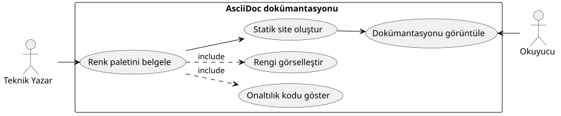
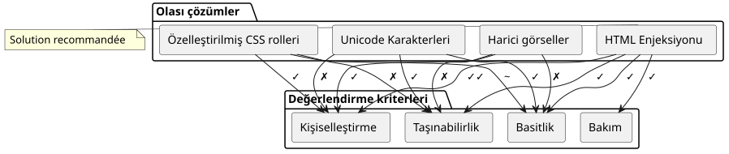
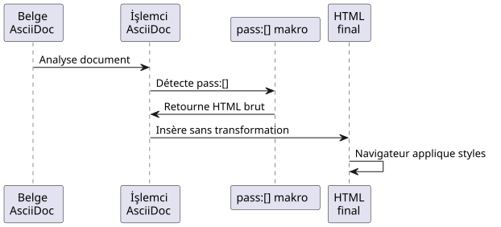
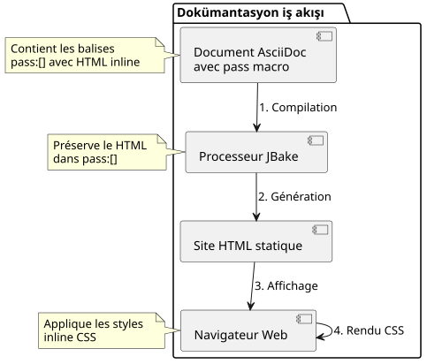

AsciiDoc'de renkli kareleri gösterme: Pratik kılavuz
Yayınlandı: 01 November 2025
Giriş
Teknik belge hazırlanırken, özellikle stil kılavuzları veya kullanıcı arayüzü spesifikasyonları için, renk paletlerini görüntülemek sıkça gereklidir. AsciiDoc, belgeler için oldukça güçlü olsa da, renk nümunelerini görüntülemek için yerel bir sözdizimi sunmaz. Bu makale, sorunu incelemek ve HTML enjeksiyonu üzerinden şık bir çözüm önermektedir.
Problematik
Kullanım bağlamı
Bir web uygulama temasının CSS değişkenlerini dokümantasyon yapıyorsunuzu hayal edin. Şunlara ihtiyacınız var :
-
Hex renk kodlarını listele
-
Her renk için görsel bir ön izleme göster
-
Kaynak belgenin okunabilirliğini korumak
-
JBake gibi statik site oluşturucularla uyumluluğu sağlamak

Olası yaklaşımlar
Bir AsciiDoc belgesinde renk görüntülemek için çeşitli çözümler düşünülebilir :

Seçenek 1: Unicode karakterleri
Unicode karakterlerin kullanılması olarak`■`(■) basit ama sınırlı:
* ■ --accent-color: #7952b3 (violet Bootstrap)Sınırlamalar : Renk üzerinde kontrol yok, sistem yazı tipine bağlı.
Seçenek 2 : Harici Görüntüler
Her renk için PNG veya SVG görüntüler oluşturun:
* image:colors/violet.svg[width=16] --accent-color: #7952b3Sınırlamalar : Ağır bakım, dosya sayısının artışı, otomatik senkronizasyon yok.
Seçenek 3 : Özel CSS roller
CSS sınıflarını tanımlayın ve AsciiDoc rollerini kullanarak uygulayın :
* [.color-violet]##■## --accent-color: #7952b3Limitations : Bir harici stil sayfası gereklidir, tüm renklerin önceden tanımlanması gerekir.
Seçenek 4 : HTML enjeksiyonu (seçilen çözüm)
Makroyu kullan``HTML’i inline stillerle eklemek
* pass:[<span style="display:inline-block;width:1em;height:1em;
background:#7952b3;vertical-align:middle;margin-right:0.5em"></span>]
--accent-color: #7952b3 (violet Bootstrap)Çözüm: HTML Enjeksiyonu ile
Çalışma ilkesi
Makro``AsciiDoc’un, AsciiDoc işleyici tarafından yorumlanmayacak ham içerik eklemesine izin verir. Bu, satır içi CSS stilleriyle HTML doğrudan eklememizi sağlar.

Uygulama
İşte enjekte edilecek HTML yapısı:
<span style="display:inline-block;
width:1em;
height:1em;
background:#7952b3;
vertical-align:middle;
margin-right:0.5em">
</span>CSS özelliklerinin açıklaması
| Mülk | Fonksiyon |
|---|---|
|
width/height’i ayarlamanıza izin verirken inline akış içinde kalmanızı sağlar |
|
Kare boyutu, yazı tipi boyutuna göre (responsive) |
|
Görüntülenecek renk (ihtiyacınıza göre değişken) |
|
Kareyi yanındaki metinle hizala |
|
Kare ile metin arasındaki boşluk |
Tam örnek
İşte bir tema paleti belgelenen bir örnek:
== Thème Clair
* pass:[<span style="display:inline-block;width:1em;height:1em;background:#f8f9fa;border:1px solid #ccc;vertical-align:middle;margin-right:0.5em"></span>] --bg-primary: `#f8f9fa` (blanc cassé)
* pass:[<span style="display:inline-block;width:1em;height:1em;background:#212529;vertical-align:middle;margin-right:0.5em"></span>] --text-primary: `#212529` (noir très foncé)
* pass:[<span style="display:inline-block;width:1em;height:1em;background:#7952b3;vertical-align:middle;margin-right:0.5em"></span>] --accent-color: `#7952b3` (violet Bootstrap)
* pass:[<span style="display:inline-block;width:1em;height:1em;background:#61428f;vertical-align:middle;margin-right:0.5em"></span>] --accent-hover: `#61428f` (violet plus foncé)
* pass:[<span style="display:inline-block;width:1em;height:1em;background:#ffffff;border:1px solid #ccc;vertical-align:middle;margin-right:0.5em"></span>] --card-bg: `#ffffff` (blanc)Aşağıdaki renderi kim üretiyor:
Açık Tema
-
--bg-primary:`#f8f9fa`(ak beyaz)
-
--text-primary:`#212529`(çok koyu siyah)
-
--accent-color:`#7952b3`(menekşe Bootstrap)
-
--accent-hover:`#61428f`(daha koyu mor)
-
--card-bg:`#ffffff`(beyaz)
En iyileştirmeler ve iyi uygulamalar
Açık renkleri yönet
Açık renkler (beyaz, çok açık gri) için beyaz arka planda görünür olmaları için bir çerçeve ekleyin:
<span style="display:inline-block;width:1em;height:1em;
background:#ffffff;border:1px solid #ccc;
vertical-align:middle;margin-right:0.5em"></span>Gri kenar (border:1px solid #ccc) beyaz arka plan üzerinde beyaz kareyi sınırlar.
Karelerin boyutunu ayarla
Karelerin boyutunu ihtiyacınıza göre ayarlayabilirsiniz:
* pass:[<span style="display:inline-block;width:1.5em;height:1.5em;background:#7952b3;vertical-align:middle;margin-right:0.5em"></span>] Grand carré
* pass:[<span style="display:inline-block;width:0.8em;height:0.8em;background:#7952b3;vertical-align:middle;margin-right:0.5em"></span>] Petit carréBirimin kullanımı`em`karelerin yazı boyutuna uyarlanmasını garantiler
Varyantlar oluştur
Özel ihtiyaçlar için farklı şekiller oluşturabilirsiniz:
Renkli daire
* pass:[<span style="display:inline-block;width:1em;height:1em;background:#7952b3;border-radius:50%;vertical-align:middle;margin-right:0.5em"></span>] Cercle violetRenkli kenarlı kare
* pass:[<span style="display:inline-block;width:1em;height:1em;background:#ffffff;border:3px solid #7952b3;vertical-align:middle;margin-right:0.5em"></span>] Bordure violetteÇözüm mimarisi

Avantajlar ve sınırlamalar
Avantajlar
-
✓ Autonomie : Harici dosyalara bağımlılık yok
-
✓ Taşınabilirlik : Tüm AsciiDoc işlemcileriyle çalışır
-
✓ Senkronizasyon : Renk kodu doğrudan HTML’de
-
✓ Esneklik : Stilin tam kişiselleştirmesi
-
✓ Maintenance : Hexadecimal kodunun basit değişikliği
-
✓ JBake Uyumluluğu : Statik site jeneratörleriyle mükemmel şekilde çalışır
Sınırlamalar
-
✗ Sözel açıklık: AsciiDoc kaynağında tekrarlanan HTML kodu
-
Kaynak okunabilirliği : Kaynak belge daha az temiz.
-
Erişilebilirlik : Doğal alternatif metin yok (manuel olarak eklenmeli)
Erişilebilirlik iyileştirmesi
Kareleri ekran okuyuculara erişilebilir hale getirmek için:
* pass:[<span role="img" aria-label="Couleur violet Bootstrap"
style="display:inline-block;width:1em;height:1em;background:#7952b3;
vertical-align:middle;margin-right:0.5em"></span>]
--accent-color: `#7952b3` (violet Bootstrap)özellikler`role="img"` et `aria-label`Yardım teknolojilerine görsel içeriği anlamak ve açıklamak izni verir
Somut örnek: Temalar dokümantasyonu
Birden çok konuyu dokümante eden tam bir örnek:
= Guide des couleurs de l'application
== Thème Clair (`:root`)
* pass:[<span style="display:inline-block;width:1em;height:1em;background:#f8f9fa;border:1px solid #ccc;vertical-align:middle;margin-right:0.5em"></span>] --bg-primary: `#f8f9fa` (blanc cassé)
* pass:[<span style="display:inline-block;width:1em;height:1em;background:#212529;vertical-align:middle;margin-right:0.5em"></span>] --text-primary: `#212529` (noir très foncé)
* pass:[<span style="display:inline-block;width:1em;height:1em;background:#7952b3;vertical-align:middle;margin-right:0.5em"></span>] --accent-color: `#7952b3` (violet Bootstrap)
== Thème Sombre (`[data-bs-theme="dark"]`)
* pass:[<span style="display:inline-block;width:1em;height:1em;background:#212529;vertical-align:middle;margin-right:0.5em"></span>] --bg-primary: `#212529` (noir très foncé)
* pass:[<span style="display:inline-block;width:1em;height:1em;background:#ffffff;border:1px solid #999;vertical-align:middle;margin-right:0.5em"></span>] --text-primary: `#ffffff` (blanc)
* pass:[<span style="display:inline-block;width:1em;height:1em;background:#0d6efd;vertical-align:middle;margin-right:0.5em"></span>] --accent-color: `#0d6efd` (bleu Bootstrap)
== Thème Contraste Élevé (`[data-bs-theme="high-contrast"]`)
* pass:[<span style="display:inline-block;width:1em;height:1em;background:#000000;vertical-align:middle;margin-right:0.5em"></span>] --bg-primary: `#000000` (noir)
* pass:[<span style="display:inline-block;width:1em;height:1em;background:#ffffff;border:1px solid #000;vertical-align:middle;margin-right:0.5em"></span>] --text-primary: `#ffffff` (blanc)
* pass:[<span style="display:inline-block;width:1em;height:1em;background:#00ff00;vertical-align:middle;margin-right:0.5em"></span>] --accent-color: `#00ff00` (vert vif)Sonuç
Macro aracılığıyla HTML enjeksiyonu`` d’AsciiDoc, teknik dokümantasyonda renk örneklerini görüntülemek için şık ve pratik bir çözüm sunar. Hafifçe uzun olsa da, bu yöntem maksimum taşınabilirlik ve basitleştirilmiş bakım sağlar.
Bu teknik harici bir yapılandırma gerektirmez, ek bir stil sayfası gerektirmez ve JBake ile tüm standart AsciiDoc işlemcileriyle hemen çalışır.
İlk renkli kareyi oluşturduktan sonra, HTML kodunu kopyala-yapıştır yapıp onaltılık kodu değiştirerek hızlıca tam bir palet oluşturabilirsiniz.
Bu teknik, özel görsel işleme gerektiren farklı kullanım durumlarına genişletilebilir: simgeler, rozetler, basit grafikler veya stilinin hassas kontrolü gerektiren herhangi bir görsel öğe.
Kaynaklar
2025-11-01 tarihinde yayınlanan makale